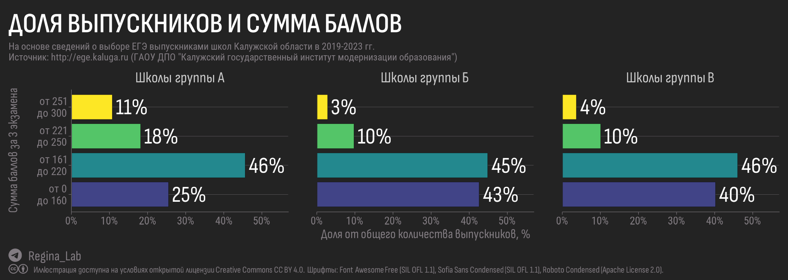

Попытка оценить эффективность образовательных учреждений по результатам сдачи ЕГЭ в 2019-2023 гг. Материал содержит интерактивные таблицы с показателями школ и рейтингами.
Приближается сезон записи в школы и всё чаще в сети Интернет звучат вопросы об их реальном уровне. В России немало рейтингов школ, но практически все они рассчитываются по методикам, которые невозможно проверить. При этом доступных, а тем более открытых данных, которые можно было бы использовать для собственного исследования или воспроизведения рейтингов, напротив, очень мало.
Нас давно интересует тема среднего образования и вот мы собрали доступные сведения о школах Калужской области и решили построить собственный рейтинг. Это не заказное и не “профессиональное” исследование, поэтому методику оценки мы придумали сами.
Почему мы назвали рейтинг “открытым”? Потому что таблицы ниже вы можете не только просматривать, фильтровать и ранжировать, но также сохранить в виде файлов CSV/Excel для того, чтобы проверить наши расчеты или попробовать создать свой собственный рейтинг. Прежде чем использовать или цитировать результаты нашей оценки, пожалуйста, ознакомьтесь с методикой. В случае возникновения вопросов, задайте вопрос авторам.
Другие материалы по теме можно будет найти в блоге, используя категории “школы” и “образование”.
В этой части мы будем ранжировать школы на основании результатов сдачи ЕГЭ с 2019 по 2023 гг.
В тексте ниже будут использованы следующие сокращения: ЕГЭ – единый государственный экзамен, ГИА-11 – государственная итоговая аттестация 11-классников, ВТГ – выпускники текущего года.
В доступных на сайте http://ege.kaluga.ru материалах можно найти таблицы с названием “Рейтинг образовательных организаций по интегральным показателям качества подготовки выпускников”, в которых для каждой школы показана доля (от общего числа) выпускников текущего года (ВТГ), чей суммарный балл по трем выбранным предметам попал в диапазоны:
Г1. до 160 баллов Г2. от 161 до 220 баллов Г3. от 221 до 250 баллов Г4. от 251 до 300 баллов
На основании этих данных мы разделили образовательные организации на 3 группы и для каждой построили отдельный рейтинг.
Договоримся считать участие школы в ГИА-11 стабильным, если выполняется любое из двух условий:
(а) в период с 2019 по 2023 год не менее 60 выпускников школы сдавали ЕГЭ,
(б) в период с 2019 по 2023 год выпускники школы участвовали в ЕГЭ не менее 3 раз и при этом в каждый год участвовало не менее 10 человек.
На основании этих критериев в группу А были отобраны 107 школ, на долю которых приходится 87% выпускников, сдававших ЕГЭ с 2019 по 2023 годы.
В группу Б мы отнесем школы, которые не попали в группу А из-за того, что в некоторые годы в ЕГЭ принимали участие менее 10 их выпускников, при этом за наблюдаемый 5-летний период в ЕГЭ приняли участие от 15 до 60 выпускников этих школ. В итоге в группу Б попали 57 школ, на долю которых пришлось 11% выпускников.
Оставшиеся образовательные учреждения, выпускники которых сдавали ЕГЭ с 2019 по 2023 год, попали в группу В. Всего – 62 школ, в каждой из которых за весь наблюдаемый 5-летний период в ЕГЭ приняли участие 15 или менее выпускников. В общем объеме выпускников Калужской области, сдававших ЕГЭ в период с 2019 по 2023 год, учащиеся из школ группы В составляют всего 2.6%.
Различия между группами достаточно наглядны – диаграмма ниже показывает доли выпускников, набравших определенное количество баллов в каждой группе.

В школах группы А доля выпускников, набравших от 251 до 300 баллов, почти втрое больше, чем в группах Б и В; доля набравших от 220 до 250 – на 80% выше; а доля тех, кто набрал менее 160 баллов, примерно на 40% ниже.
На основе имеющихся данных идеальную формулу оценки для построения рейтинга школ по результатам сдачи ЕГЭ придумать точно не получится, поэтому мы придумали несколько собственных моделей для расчета итоговой оценки (в формулах ниже Гx – доля выпускников, набравших баллы, соответствующие группе Х):
Модель М1 (либеральная)
“Все, кто вышел на экзамен, уже победили”
Это максимально мягкая модель, поддерживающая известную точку зрения “Лучше в школе дядю слушать, чем в подворотне водку кушать”. Но за каждого выпускника, попадающего в группу с более высокими баллами, естественно, будем добавлять более высокие баллы.
Формула: Оценка = 25 • Г4 + 10 • Г3 + 3 • Г2 + Г1
Модель М2 (умеренная)
“За недотянувших до 160 – штраф, за остальных – премируем”
Доля выпускников из групп Г2, Г3 и Г4 складываются с весами 1, 3 и 10; доля попавших в группу Г1 вычитается с весом 5. Модель штрафует школу за плохо подготовленных выпускников.
Формула: Оценка = 10 • Г4 + 3 • Г3 + Г2 － Г1
Модель М3 (практичная).
“За недотянувших до 160 – штраф, премируем только за тех, кто набрал больше 220”
Отличается от модели Б тем, что доля выпускников, отнесенных к группе Г2 не учитывается, остальные веса точно такие же. Группа Г2 – самая многочисленная, именно под неё выравнивается сложность задач ЕГЭ и по этой причине за выпускников группы Г2 школа не получает никаких баллов.
Формула: Оценка = 10 • Г4 + 3 • Г3 － Г1
Модель М4 (радикальная).
“Успех начинается от 220 баллов, остальное – неудача”
Доля выпускников из групп Г1 и Г4 учитываются со степенью 2 (значение возводится в квадрат), доли Г2 и Г3 применяются без весов. Таким образом, школа получает штрафные баллы за выпускников не только группы Г1, но и Г2.
Формула: Оценка = (Г4)2 + Г3 － Г2 － (Г1)2
Штрафы за выпускников, набравших невысокое количество баллов, отражают следующую точку зрения: каждый выпускник, попавший в группу Г1 – это не только потраченные впустую 2 года молодой жизни с сертификатом о неудаче, но и напрасно потраченные ресурсы школы (бюджетные, капитальные, человеческие). Профессиональное ориентирование и психологический контроль должны были помочь таким ученикам после 9 класса выбрать другие программы развития.
Для каждой модели (М1-М4) мы рассчитали ранговые значения школ в группах А-В, после чего полученные для организаций ранги усреднили (среднее арифметическое) для получения итогового положения места организации в рейтинге.
В таблицах 4 и 5 организации отсортированы по итоговому рангу, но списки школ можно отсортировать по любой из моделей, кликнув на заголовок соответствующего столбца таблицы.
Несмотря на различия между моделями десятка лидеров рейтинга оставалась неизменной – 6 из 10 школ из Обнинска!
По мере движения вниз по рейтингу влияние модели увеличивается, но даже второй и третьей десятках рейтинга смена модели не приводила к существенной вариативности.
Рейтинг школ группы Б характеризуется меньшей стабильностью по сравнению с рейтингом группы А, поскольку группа Б объединяет небольшие школы, среди которых есть как частные образовательные организации (“Радуга”, Обнинский колледж, “Чаша”), так и общеобразовательные школы из небольших населенных пунктов. Вполне возможно, что первые, занявшие более высокие места в рейтинге, могут себе позволить заниматься профотбором и более серьезно занимаются подготовкой выпускников к сдаче ЕГЭ.
Из-за малого числа выпускников ранжирование школ группы В по результатам ЕГЭ лишено смысла, поскольку результат будет отражать не уровень школы, а редкие эпизоды (наблюдения).
Например, если в небольшой сельской школе на ЕГЭ выйдет всего 1 выпускник и наберёт от 251 до 300 баллов, можно ли считать школу лидером региона? Несмотря на финансовые успехи “алкоиндустрии”, земля Русская богата талантами, поэтому такие истории вовсе не редкость.
В качестве примера можно привести Асмоловскую среднюю общеобразовательную школу, в которой за 5 лет ЕГЭ сдавали только 3 человека, но один (одна) из них в 2019 году дал школе 100%-ное попадание в группе Г4. Согласно общедоступным данным (Википедия) эта школа обслуживает 36 населенных пунктов, входящих в состав сельского поселения «Деревня Асмолово» с общей численностью населения менее 1000 человек. Из результатов самообследования школы можно узнать, что в 2022 году в ней обучалось всего 25 человек (ни одного в 10 и 11 классах) и, что “в школе качество знаний соответствует низкому уровню. Объяснение данной проблемы педагоги видят в невысоком уровне познавательных интересов обучающихся, низкой мотивации обучающихся к познавательной деятельности.”. Но вот кто-то взял и как следует постарался!
Что произойдет, если в школах из группы В перестанут стараться?
Ответ на этот вопрос приведен в таблице 6, где перечислены школы, имеющие лицензию на среднее общее образование, но не появлявшиеся ни разу в статистике ГИА-11 в период с 2019 по 2023 гг.
Наукоград прекрасно представлен в первой десятке обоих рейтингов (А и Б), но не все школы одинаковы. На иллюстрации показаны школы из групп А и Б и их места в рейтингах А и Б (рейтинг устроен таким образом, что одно место могут занимать несколько школ Калужской области, поэтому 40-е место в рейтинге не означает, что впереди 39 школ, их может быть больше).
Подход, использованный нами для оценки и ранжирования школ, не лишен изъянов.
Показатели ЕГЭ не отражают всех достоинств и особенностей сравниваемых школ. В одной школе лучшие дополнительные курсы, в другой – хорошие спортсекции, в третьей – строгое соблюдение порядка, в четвертой – преподаватели, “умеющие в олимпиады”. Учесть подобные показатели мы не имели возможности в силу отсутствия данных.
Несмотря на критику ЕГЭ, на сегодняшний день это важнейшая дверь, отделяющая выпускников от поступления в вузы (“кующие интеллектуальную элиту России будущего”). Предлагаемый нами подход отражает способность школы подводить школьников к этой двери с необходимым запасом навыков и уверенности в силах. Хочется особенно подчеркнуть важность служб профориентации и психологического сопровождения для повышения эффективности подготовки учащихся.
И1. Портал Государственная итоговая аттестация в Калужской области ГАОУ ДПО “Калужский государственный институт развития образования”. В разделах “Аналитические и методические материалы ГИА-11” и Статистика опубликованы результаты сдачи ЕГЭ в школах. Конечно, данные с результатами ЕГЭ за 2019, 2022, 2023 доступны в файлах doc/docx, а данные 2020-2021 гг. – в PDF, но и на том спасибо!
И2. На сайте ГАОУ ДПО «Калужский государственный институт развития образования» http://kgiro.kalugaedu.ru/ в разделе Механизмы управления качеством образовательных результатов доступны сведения по районам и городам КО.
И3. В разделе “Открытые данные Калужской области” на старом портале органов власти Калужской области можно найти перечень организаций, осуществляющих образовательную деятельность. Эти данные также можно извлечь из Открытых данных Рособрнадзора.
Мы вдоволь наупражнялись в методах извлечения и очистки данных. В некоторых таблицах обнаружили несогласующиеся сведения и опечатки (там, где это было возможно, направили оператору данных письма с соответствующими указаниями).
В будущем мы постараемся добавить новые данные о школах Калужской области.
Открытый рейтинг школ Калужской области (часть 1) // Блог Regina Lab. - 2024. - URL: https://reginaobninsklab.github.io/posts/kaluga-schools-rank-part1/. - Дата публикации: 10 марта 2024 г.
Если не указано иное, то статья целиком и составляющие её текст, иллюстрации и данные могут использоваться на условиях публичной лицензии Creative Commons CC BY 4.0 Deed Attribution 4.0 International.
См. соответствующий раздел на странице “О проекте”.
Allaire J, Xie Y, Dervieux C, McPherson J, Luraschi J, Ushey K, Atkins A, Wickham H, Cheng J, Chang W, Iannone R (2023). rmarkdown: Dynamic Documents for R. R package version 2.22, https://github.com/rstudio/rmarkdown.
Ooms J (2023). magick: Advanced Graphics and Image-Processing in R. R package version 2.8.2, https://CRAN.R-project.org/package=magick.
Pedersen T (2024). patchwork: The Composer of Plots. R package version 1.2.0, https://CRAN.R-project.org/package=patchwork.
Qiu Y, details. aotifSfAf (2022). sysfonts: Loading Fonts into R. R package version 0.8.8, https://CRAN.R-project.org/package=sysfonts.
Qiu Y, details. aotisSfAf (2023). showtext: Using Fonts More Easily in R Graphs. R package version 0.9-6, https://CRAN.R-project.org/package=showtext.
Wickham H (2022). stringr: Simple, Consistent Wrappers for Common String Operations. R package version 1.5.0, https://CRAN.R-project.org/package=stringr.
Wickham H (2016). ggplot2: Elegant Graphics for Data Analysis. Springer-Verlag New York. ISBN 978-3-319-24277-4, https://ggplot2.tidyverse.org.
Wickham H, François R, Henry L, Müller K, Vaughan D (2023). dplyr: A Grammar of Data Manipulation. R package version 1.1.2, https://CRAN.R-project.org/package=dplyr.
Wickham H, Henry L (2023). purrr: Functional Programming Tools. R package version 1.0.1, https://CRAN.R-project.org/package=purrr.
Wickham H, Hester J, Bryan J (2023). readr: Read Rectangular Text Data. R package version 2.1.4, https://CRAN.R-project.org/package=readr.
Wickham H, Seidel D (2022). scales: Scale Functions for Visualization. R package version 1.2.1, https://CRAN.R-project.org/package=scales.
Wickham H, Vaughan D, Girlich M (2023). tidyr: Tidy Messy Data. R package version 1.3.0, https://CRAN.R-project.org/package=tidyr.
Wilke C, Wiernik B (2022). ggtext: Improved Text Rendering Support for ‘ggplot2’. R package version 0.1.2, https://CRAN.R-project.org/package=ggtext.
Xie Y (2023). knitr: A General-Purpose Package for Dynamic Report Generation in R. R package version 1.43, https://yihui.org/knitr/.
Xie Y (2015). Dynamic Documents with R and knitr, 2nd edition. Chapman and Hall/CRC, Boca Raton, Florida. ISBN 978-1498716963, https://yihui.org/knitr/.
Xie Y (2014). “knitr: A Comprehensive Tool for Reproducible Research in R.” In Stodden V, Leisch F, Peng RD (eds.), Implementing Reproducible Computational Research. Chapman and Hall/CRC. ISBN 978-1466561595.
Xie Y, Allaire J, Grolemund G (2018). R Markdown: The Definitive Guide. Chapman and Hall/CRC, Boca Raton, Florida. ISBN 9781138359338, https://bookdown.org/yihui/rmarkdown.
Xie Y, Dervieux C, Riederer E (2020). R Markdown Cookbook. Chapman and Hall/CRC, Boca Raton, Florida. ISBN 9780367563837, https://bookdown.org/yihui/rmarkdown-cookbook.